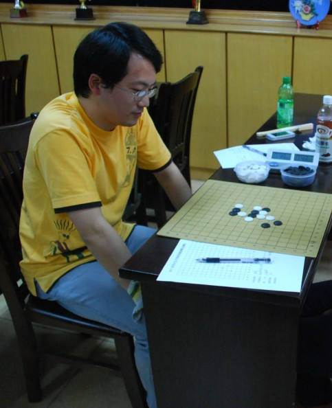

顾炜夺得苏沪精英邀请赛冠军！！！！！
#1 顾炜夺得苏沪精英邀请赛冠军！！！！！作者：小丸.net 发表时间：2011-8-14 14:50:37
如题，在刚刚结束的第七轮顾炜使用瑞星和12大定，逼和黄宇峰，由于棋情谢维详的失利，顾炜获得了本次精英赛的冠军!
［此帖子已被 小丸.net 在 2011-8-14 14:51:17 编辑过］
#2 Re:顾炜夺得苏沪精英邀请赛冠军！！！！！作者：岑小鱼 发表时间：2011-8-14 15:04:51
祝贺......
恰当的时候用恰当的策略....
#3 Re:顾炜夺得苏沪精英邀请赛冠军！！！！！作者：四川连珠魂 发表时间：2011-8-14 15:19:54
 祝贺！
祝贺！#4 Re:顾炜夺得苏沪精英邀请赛冠军！！！！！作者：何柔 发表时间：2011-8-14 15:24:44
恭喜！
#5 Re:顾炜夺得苏沪精英邀请赛冠军！！！！！作者：清风明月月 发表时间：2011-8-14 15:35:20
恭喜，恭喜，祝贺！#6 Re:顾炜夺得苏沪精英邀请赛冠军！！！！！作者：傀儡 发表时间：2011-8-14 15:40:50
恭喜恭喜~！#7 Re:顾炜夺得苏沪精英邀请赛冠军！！！！！作者：飞翔 发表时间：2011-8-14 15:51:14
鲜花 掌声
#8 Re:顾炜夺得苏沪精英邀请赛冠军！！！！！作者：我是裁判 发表时间：2011-8-14 15:58:46
难得顾伟同志再尝冠军的滋味！祝贺！！！1
#9 Re:顾炜夺得苏沪精英邀请赛冠军！！！！！作者：星月思过 发表时间：2011-8-14 16:02:00
恭喜恭喜～～～#10 Re:顾炜夺得苏沪精英邀请赛冠军！！！！！作者：蓝天蓝 发表时间：2011-8-14 16:27:04
恭喜顾炜老师#11 Re:顾炜夺得苏沪精英邀请赛冠军！！！！！作者：黑白之巅 发表时间：2011-8-14 16:28:01
祝贺
1楼是顾炜大师吗？求解惑
#12 Re:顾炜夺得苏沪精英邀请赛冠军！！！！！作者：润本 发表时间：2011-8-14 16:57:08
一家之言，想在比赛中逼和对方其实是萎缩流的表现，除非是团体赛，服从教练安排，从全队大局出发可以这样做！
#13 Re:顾炜夺得苏沪精英邀请赛冠军！！！！！作者：山东歪歪 发表时间：2011-8-14 18:28:06
哈，恭喜恭喜啦！！
#14 Re:顾炜夺得苏沪精英邀请赛冠军！！！！！作者：aabb 发表时间：2011-8-14 20:31:09
照片上的盘面不是逼和黄宇峰那盘吧？
#15 Re:顾炜夺得苏沪精英邀请赛冠军！！！！！作者：掌棋宣传员 发表时间：2011-8-14 20:32:53
恭喜恭喜#16 Re:Re:顾炜夺得苏沪精英邀请赛冠军！！！！！作者：岑小鱼 发表时间：2011-8-14 22:37:56
引用：
原文由 黑白之巅 发表于 2011-8-14 16:28:01 :祝贺
1楼是顾炜大师吗？求解惑
是的..
#17 Re:顾炜夺得苏沪精英邀请赛冠军！！！！！作者：五连达人 发表时间：2011-8-14 22:40:41

#18 Re:顾炜夺得苏沪精英邀请赛冠军！！！！！作者：雅匪 发表时间：2011-8-16 23:47:12
祝贺